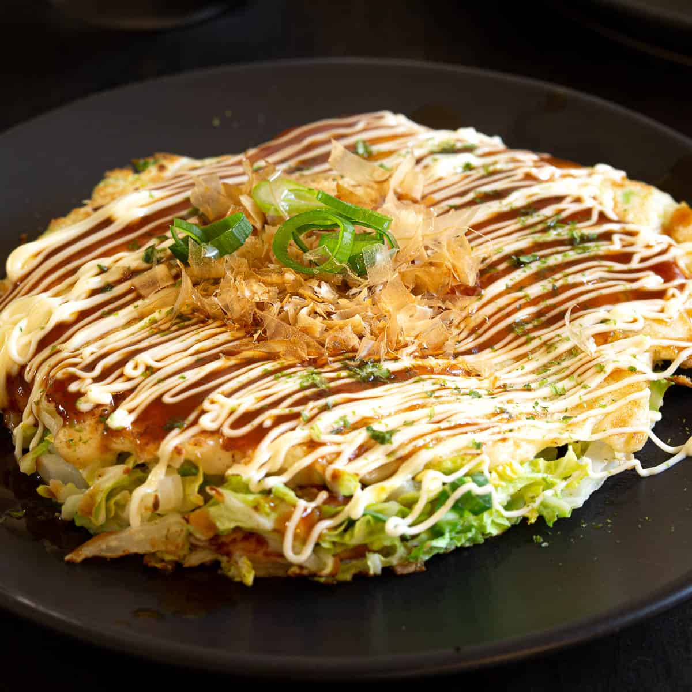

A popular street food from Osaka, Okonomiyaki is a delicious Japanese savory pancake “grilled as you like it“ with your choice of protein and tasty condiments and toppings. My recipe includes the 6 key ingredients that give your Okonomiyaki a truly authentic taste.
Serves 2